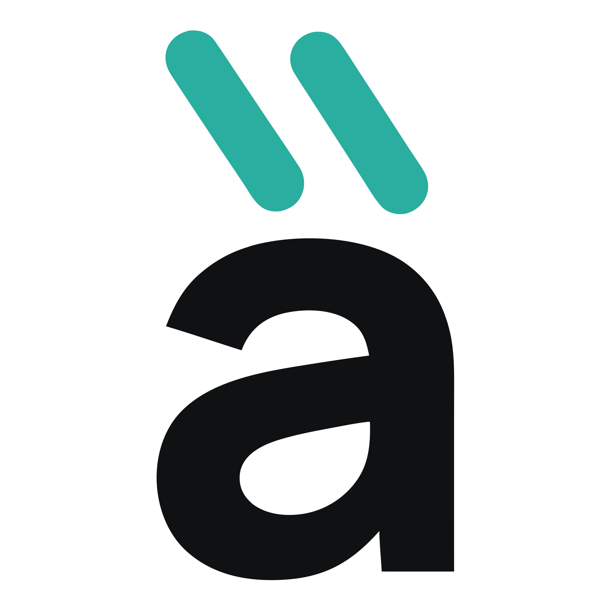
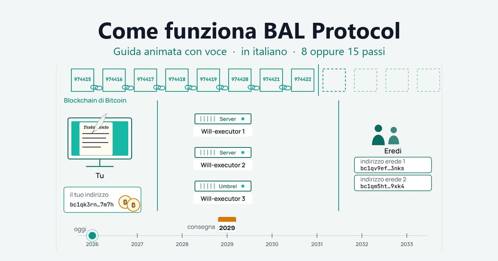

![Copertina SAFE21: il logo di Àncòra, la parola àncòra in bianco con i due accenti verde-acqua, e sotto il motto «àncora per te, ancòra per loro». In basso: il plugin per Electrum riscritto da SAFE21 per usare BAL Protocol, l'eredità dei tuoi bitcoin senza consegnare le chiavi a nessuno. A destra un riquadro «Come funziona»: una linea del tempo da Oggi (i bitcoin restano tuoi) alla Data di consegna (agli eredi che hai scelto), tre copie custodite dai will-executor, e la frase: finché ci sei tu non parte niente, rinnovi e la data si sposta avanti, se ti fermi i bitcoin arrivano agli eredi.](images/copertina-ancora-plugin.webp)
Il problema che Àncòra risolve
I tuoi bitcoin sono davvero tuoi perché le chiavi le hai solo tu. È il punto di forza di Bitcoin, ed è anche il suo punto debole quando pensi a chi verrà dopo di te. Se non ci sei più, nessuno può toccarli. Non la banca, non un notaio, non i tuoi figli.
Ne abbiamo già parlato in Cosa succede ai tuoi bitcoin quando non ci sei più?. La risposta che preferiamo si chiama BAL Protocol (Bitcoin After Life): un modo per lasciare i bitcoin a chi vuoi tu, alla data che decidi tu, senza consegnare le chiavi a nessuno e senza intermediari.
Oggi presentiamo lo strumento che usiamo per metterlo in pratica: Àncòra 0.8.0, il plugin per Electrum che SAFE21 ha riscritto partendo dal codice originale di Bitcoin After Life. È la prima versione che consigliamo a tutti: ha l'eredità in più consegne, la firma su un secondo computer, i portafogli multifirma e la riga di comando.
Perché si chiama Àncòra
Il nome tiene insieme due parole che in italiano si scrivono quasi uguali.
- Àncora, con l'accento sulla prima a: ciò che tiene fermo, che dà sicurezza.
- Ancòra, con l'accento sulla seconda: ciò che continua, che non si ferma.
Da qui il nostro motto: Àncora per te, ancòra per loro. Finché ci sei tu, i bitcoin restano al sicuro nel tuo portafoglio, protetti dalle tue chiavi private: non su un exchange, non affidati a qualcun altro. Quando non ci sarai più, arrivano alle persone che hai scelto, senza intermediari.

Il logo è la parola àncòra con i due accenti in verde-acqua, uno per ciascun significato. Come icona usiamo la sola «à» con i due accenti. Li trovi nel plugin e nel report stampabile.
Prima guarda come funziona
Prima di parlare del plugin, guarda il protocollo. Ci sono due animazioni con la voce, in italiano: quella semplice spiega BAL Protocol in due minuti con un paragone di tutti i giorni: un assegno post-datato; quella completa dura quattro minuti e aggiunge i casi veri della vita. Si aprono a pagina intera; tocca lo schermo una volta e partono dall'inizio, con la voce.

Guida animata, con voce
Due animazioni in italiano. Scegli quella che sta nel tuo tempo.
La versione completa aggiunge i casi veri della vita: cosa succede se cambi l'importo nel portafoglio, se aggiungi un erede, se vuoi spostare la data più avanti, e cosa succede se quasi tutti i will-executor spariscono.
In breve, quello che raccontano:
- Scrivi il testamento nel plugin: scegli gli eredi e la data di consegna.
- Il plugin prepara una copia per ogni will-executor, valida solo da quella data. Come un assegno post-datato.
- I will-executor conservano la copia. Non hanno le tue chiavi e non possono fare altro che aspettare.
- In ogni copia c'è una piccola mancia per il will-executor: è il suo compenso, e il suo motivo per esserci ancora fra anni.
- Finché ci sei tu, non parte niente. Rinnovi, e la data si sposta avanti.
- Alla data scelta, i will-executor inviano la copia alla rete. I bitcoin arrivano agli eredi.
Cosa ha cambiato SAFE21
Il protocollo è di Bitcoin After Life e non lo abbiamo toccato. Quello che abbiamo riscritto è il modo in cui lo usi. Chi ci segue sa che per noi la tecnologia deve adattarsi alla persona, non il contrario.
Semplice da usare
- Una procedura guidata in quattro passi. Quando, a chi, con quali will-executor, riepilogo. Le date si scelgono nel tuo fuso orario, con la data del testamento mostrata accanto.
- Modalità Base e Avanzata. In Base vedi solo quello che serve per decidere. Le commissioni, i periodi rinnovabili, le consegne multiple e le opzioni tecniche restano in Avanzata.
- La vista «Futuro». Una linea del tempo che mostra oggi, la data di consegna, i will-executor che hanno la copia e una frase chiara: «Se il testamento non viene più controllato né rinnovato, il [data] i bitcoin andranno a: …».
- Il controllo che parla chiaro. Ogni verifica finisce con una frase e, se stai per cambiare qualcosa, con il riquadro «Cosa cambia rispetto al testamento in vigore»: data, eredi, quote, will-executor, commissione.
- Un report in PDF da stampare e conservare: stato, eredi con indirizzi e quote, will-executor, linea del tempo. Niente chiavi, niente segreti.
- Avvisi a colori quando la data di consegna si avvicina: giallo sotto i dodici mesi, rosso sotto i sei.
- Nessuna spesa a tua insaputa. Il plugin prepara da solo le nuove copie quando serve, ma non manda mai una transazione a pagamento senza che tu la confermi.
- Italiano, inglese e spagnolo, con l'animazione qui sopra anche dentro il plugin, funzionante senza connessione.
L'eredità in più consegne: il Multiverso
Un testamento classico consegna tutto in una volta, a una data. Con Àncòra 0.8.0, in modalità Avanzata, puoi dividere l'eredità in due o tre consegne, a date diverse: per esempio una parte subito, una parte fra tre anni e il resto fra sei. Una sola tabella fissa le date e le quote di ciascun erede.
Perché farlo? Perché un erede giovane può aver bisogno di tempo prima di gestire tutto. Perché una parte può servire subito alla famiglia e il resto può aspettare. Perché, se le cose cambiano, cambi la tabella e il plugin rifà le copie. Ogni consegna è a tutti gli effetti un testamento BAL, con le sue copie presso i will-executor e la sua commissione: il plugin controlla che il portafoglio possa pagarle tutte e, se non basta, si ferma prima di costruire qualcosa che non starebbe in piedi.
Per vedere cosa succede nei vari casi c'è la nuova vista «Grafo» nella scheda Testamento: mostra il testamento e i suoi possibili futuri. Lo abbiamo chiamato Multiverso proprio per questo: non una sola linea del tempo, ma più strade che partono dalla stessa decisione.
Le chiavi su un secondo computer, e la multifirma
Molti di noi tengono le chiavi su un computer che non va mai in rete, e su quello collegato a internet solo un portafoglio «di sola lettura», che vede i fondi ma non può firmare. Àncòra 0.8.0 è fatto per questo modo di lavorare.
- Firma su un secondo computer. Il computer online prepara il testamento e lo salva in un file su una chiavetta. Sul computer con le chiavi, una procedura guidata in tre passi (Strumenti → Firma il testamento offline) mostra le uscite vere del testamento, eredi, importi e indirizzi, e ti chiede di confrontarle con quello che hai scritto su carta; poi firma e salva il file da riportare indietro. Ogni firma viene verificata: una firma falsa ferma il file.
- Portafogli multifirma. Àncòra funziona anche con i portafogli multifirma di Electrum, per esempio 2 di 3: ogni cofirmatario firma dalla sua parte e la commissione viene calcolata sulla dimensione reale della transazione. Lo abbiamo provato fino in fondo sulla rete di test, con la consegna eseguita da un will-executor vero.
- Anche quando sposti la data. Spostare più avanti la consegna di un testamento già inviato vuol dire invalidare il vecchio sulla blockchain. Su un portafoglio di sola lettura o multifirma, Àncòra apre la transazione da firmare sull'altro computer e ti elenca i passi, pronti da copiare su carta.
Un Check che non si fida sulla parola
Il pulsante Check è il cuore del plugin: controlla il testamento, lo rifà se serve e lo manda ai will-executor. Nella 0.8.0 dice «Ok» solo quando ogni will-executor ha davvero ricevuto il testamento; se uno lo ha perso, lo riceve di nuovo nello stesso Check.
Ogni copia porta con sé la commissione decisa dal suo will-executor: è il compenso per custodirla e per inviarla alla rete quando sarà il momento. La commissione per i miner, invece, la scegli tu, e il plugin ti avvisa se scendi sotto i 20 sat/vB: quella transazione verrà trasmessa fra anni, e deve essere abbastanza generosa perché i miner la accettino e la inseriscano nella blockchain. Se un testamento va invalidato, il plugin usa solo monete che esistono davvero sulla rete. Come sempre, nessuna transazione a pagamento parte senza la tua conferma.
Da riga di comando, anche per le intelligenze artificiali
Tutto quello che fai con i pulsanti si può fare anche senza
interfaccia grafica, con il demone di Electrum e una serie
di comandi bal_*: eredi, will-executor, data di
consegna, tabella del Multiverso, preparazione, firma, invio,
controllo, esportazione e importazione del testamento. Ogni comando
spiega i suoi parametri con --help e risponde in modo
leggibile da un programma.
electrum bal_heirs_add alice bc1q… 50%
electrum bal_will_prepare
electrum bal_will_sign --password '…'
electrum bal_will_broadcast
electrum bal_will_status
Serve a chi vuole automatizzare, a chi lavora su un server senza schermo e, sempre di più, a chi si fa aiutare da un assistente di intelligenza artificiale: un assistente può leggere lo stato del testamento, preparare le modifiche e farti vedere il risultato prima di firmare. Noi stessi, in SAFE21, usiamo la riga di comando così nei test. Le operazioni che non si possono annullare, per esempio anticipare la data di un testamento già inviato, vengono rifiutate finché non c'è una conferma esplicita, e il messaggio di rifiuto dice chiaramente all'assistente di chiedere prima a te.
Àncòra usa gli stessi will-executor e la stessa lista di Bitcoin After Life, compreso il will-executor di SAFE21. Chi gestisce un will-executor guadagna le mance in ogni caso: più persone usano il protocollo, meglio è per tutti.
Come si installa
Àncòra è pubblico, con licenza MIT, su GitHub: github.com/ManX-SAFE21/ancora-electrum-plugin ↗. Trovi sempre l'ultima versione nella pagina delle release.
- Scarica il file ZIP dell'ultima versione dalla pagina delle release ↗.
- Controlla il codice SHA-256 del file e, se vuoi, la firma PGP: trovi tutto nelle note della release.
- In Electrum 4.8.3 o successivo: Strumenti → Plugin → Aggiungi, scegli il file ZIP, attiva il plugin e riavvia Electrum.
Tre cose da sapere. Àncòra e il plugin ufficiale di Bitcoin After
Life non possono stare insieme nello stesso Electrum: scegline uno.
Un testamento fatto con il plugin originale, su Electrum dalla
versione 4.8 in poi, si apre in Àncòra senza rifare niente. E il
portafoglio deve avere indirizzi che iniziano con bc1q:
con quelli che iniziano con 1 o 3 il plugin dice chiaramente che non
è supportato. I portafogli hardware li abbiamo provati, ma non li
consigliamo: ogni transazione del testamento andrebbe firmata a mano
sul dispositivo, e dopo i problemi recenti preferiamo essere prudenti.
Ne parliamo in Una
chiavetta con la SIM dentro: cosa insegna il caso Ledger.
Cosa non cambia
Àncòra nasce dal codice originale di Bitcoin After Life, scritto da svatantrya e pubblicato con licenza MIT. Il protocollo, i will-executor, la licenza e il credito all'autore originale restano. Quello che aggiungiamo lo rilasciamo con la stessa licenza: chi vuole può leggere il codice, verificarlo e riportare le correzioni nel progetto originale.
Se preferisci non fare da solo, in SAFE21 ti accompagniamo: scegliamo insieme la soluzione adatta a te, prepariamo il testamento con Àncòra e ti lasciamo un report da conservare. Come sempre, le chiavi restano tue.
Per approfondire:
- Cosa succede ai tuoi bitcoin quando non ci sei più?
- SAFE21 diventa Will-Executor
- Easy Heirs: prepara l'eredità senza mai andare online
- Il caso Liquid: perché per l'eredità consigliamo BAL Protocol
- Il sito di Bitcoin After Life: bitcoin-after.life ↗
Questo articolo ha finalità informative e non costituisce consulenza legale, fiscale o di sicurezza. SAFE21 non prende mai in custodia i tuoi fondi. Le transazioni Bitcoin sono irreversibili: prova il plugin con piccoli importi prima di affidargli il tuo testamento.